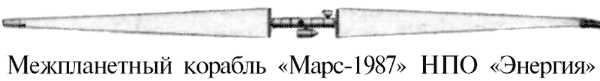
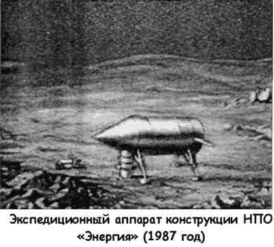
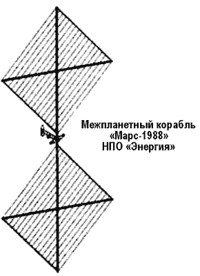
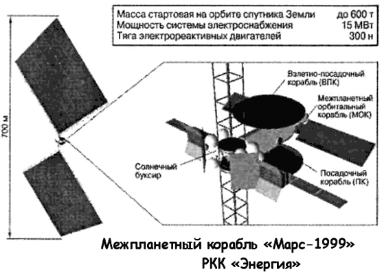
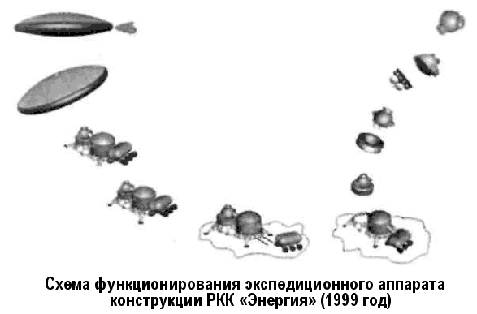
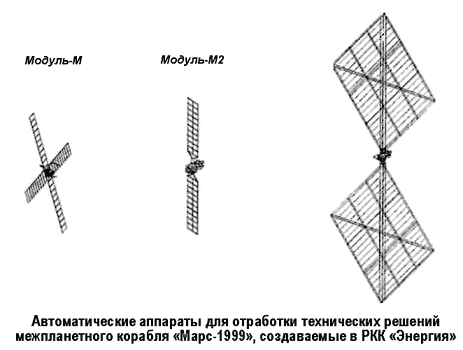

Проекты марсианских экспедиций НПО «Энергия»
В Советском Союзе к идее пилотируемой экспедиции на Марс вновь обратились в 1987 году — после успешного запуска сверхтяжелой ракеты-носителя «Энергия».
Этот проект во многом использовал технические решения программы 1969 года, разработанной еще при Василии Мишине. Главным новшеством здесь было использование ракеты-носителя «Энергия» в качестве средства доставки элементов корабля на орбиту. Кроме того, для межпланетного перелета использовались две независимые двигательные установки, каждая из которых представляла собой пакет электрореактивных двигателей с ядерным источником электроэнергии мощностью по 7,5 МВт, снабженным тепловым радиатором. Это позволило резко увеличить надежность и безопасность межпланетного перелета без увеличения начальной массы и стоимости. Увеличению надежности также способствовало и то, что на корабле планировалось устанавливать бортовое оборудование, прошедшее «обкатку» на орбитальных станциях «Салют» и «Мир».
Была полностью пересмотрена конструкция спускаемого экспедиционного аппарата (ЭА). Вместо «фары» с тепловым экраном теперь предлагалось использовать «несущий корпус» с конической носовой частью диаметром 3,8 метра, длиной 13 метров и весом 60 тонн. Аппарат имел две двигательные установки. Одна, расположенная в хвосте, должна была осуществить сход с орбиты и плавное снижение; вторая, расположенная под «брюхом», обеспечивала мягкую посадку в горизонтальном положении на четыре опоры. После посадки экипаж спускался на поверхность Марса по цилиндрическому туннелю-тамбуру. В момент отправления в верхней части цилиндра ЭА открывался люк, и через образовавшийся проем стартовал возвращаемый модуль.

Сам межпланетный корабль имел такие габариты: полная длина — 210 метров, максимальный диаметр — 4,1 метра, полная масса — 365 тонн. Согласно расчетам экспедиция на красную планету с использованием корабля «Марс-1987» заняла бы 716 дней.
Этот проект был существенно изменен в 1988 году, когда в экспедиционном комплексе в качестве энергетической установки вместо ядерного реактора предложили экологически чистую систему с использованием пленочных солнечных батарей на линейных разворачиваемых фермах, отработанных на станциях «Салют-7» и «Мир». Большое влияние на это решение оказал прогресс в создании пленочных фотопреобразователей энергии, что позволяло значительно упростить конструкцию солнечной электростанции большой мощности.


Межпланетный корабль на четырех космонавтов в версии 1988 года имел полную массу 355 тонн и состоял из следующих модулей: марсианский орбитальный аппарат (длина — 23 метра, диаметр — 4,1 метра, масса — 80 тонн, три жилых отсека, оранжерея), экспедиционный аппарат, возвращаемый аппарат (разработанный для «МЭК» 1969 года), панели солнечных батарей (площадью 200 на 200 метров каждая, масса — 40 тонн, мощность — 15 МВт), электроракетные двигатели (топливо — ксенон, тяга — 45 килограммов, скорость истечения — 40 км/с), баки с ксеноном (масса топлива — 165 тонн).
Схема полета к Марсу выглядела так. Для быстрого преодоления радиационных поясов Земли собранный на низкой орбите корабль сначала выталкивается двигателями по спирали на высоту до 40000 километров — этот переход должен занять не более 29 дней. Затем двигатели включаются на маршевый режим, подразумевающий меньшую тягу, но большую скорость истечения. 100 дней уйдет на достижение третьей космической скорости, еще 270 дней — на полет к Марсу и 38 дней — на маневр торможения.
Полетное время экспедиции в этом варианте составляло 716 дней, время пребывания на орбите Марса — 30 дней, время пребывания двух космонавтов на поверхности Марса — 7 дней.
Экспедицию на Марс планировалось провести с последовательным наращиванием средств, начиная с автоматов и заканчивая пилотируемым полетом.
Предполагалось три этапа.
Первый — отработка принципов совместного функционирования элементов марсианского экспедиционного комплекса с использованием его моделей, доставляемых грузовыми кораблями «Прогресс» на орбитальную станцию и собираемых там космонавтами и совершающих дальнейший самостоятельный полет в автоматическом режиме.
Второй — генеральная «репетиция» пилотируемой экспедиции, в ходе которой «солнечный буксир» доставит на поверхность Марса два посадочных аппарата вместо одного, причем один из них используется для отработки схемы посадки и возвращения экипажа, а второй (с несколькими марсоходами массой около 20 тонн) — для проведения детального исследования поверхности Марса.
Третий — собственно пилотируемая экспедиция на Марс.
За 10 лет проект марсианской экспедиции НПО «Энергия» (с 1994 года — РКК «Энергия» имени Королева) претерпел дополнительные коррективы в соответствии с изменившейся ситуацией в космической отрасли. Этапы подготовки экспедиции теперь напрямую связаны с этапами строительства Международной космической станции.
По сравнению с предыдущим проектом изменениям подверглись конструкция солнечных батарей — они стали модульными. Посадочный аппарат приобрел форму «диска», и теперь их два: пилотируемый и грузовой. Кроме того, конструкторы снова вернулись к численности экипажа экспедиции в шесть человек, что привело к увеличению расчетной массы межпланетного корабля до 600 тонн.
В отличие от предыдущих новый проект предусматривает широкую кооперацию с другими странами.
Например, США имеют большой опыт по посадке и взлету экипажа с Луны, посадке автоматических аппаратов на Марс. Поэтому целесообразно именно США взять на себя головную роль по разработке посадочного аппарата — одного из самых ответственных элементов экспедиции. Российская Федерация имеет большой опыт создания и эксплуатации орбитальных станций. Межпланетный орбитальный корабль по своим задачам очень близок к жилым модулям орбитальных станций. Поэтому Россия может взять на себя головную роль по разработке этого корабля. При принятии проекта РКК «Энергия» для межпланетного комплекса головная роль по разработке солнечного буксира может принадлежать как США, так и России. Но в любом случае при этом будут использоваться российские технологии по созданию трансформируемых конструкций, работам экипажа по их развертыванию.
Это один из возможных вариантов кооперации. Возможны и другие. При этом для участия в проекте приглашаются европейские страны, Япония, Канада.
Стоимость экспедиции оценивается в 20 миллиардов долларов. В проекте уже принимают участие НАСА и компания «Боинг» — со стороны США, Европейское Космическое агентство и фирма «Астриум» — со стороны Евросоюза, РКК «Энергия», Росавиакосмос, Исследовательский центр имени Келдыша, Институт космических исследований РАН, Институт медико-биологических проблем, Институт микробиологии РАН — со стороны Российской Федерации. Для повышения результативности кооперации создан Международный комитет управления пилотируемой экспедиции на Марс, в который вошли восемь представителей России, восемь — США и пять — Европейского союза. Задача комитета — координировать национальные программы развития космонавтики так, чтобы они были направлены на достижение конечной цели — организацию полета человека к Марсу.
Руководство РКК «Энергия» убеждено, что если финансирование проекта начать прямо сейчас, то вполне реально уже в 2012 году вывести к Марсу беспилотный вариант корабля, а в 2016 году отправить пилотируемую экспедицию.
Пока же в инициативном порядке запущена программа создания и испытаний автоматических аппаратов для отработки технических решений, которые лягут в основу конструкции будущего марсианского корабля.
Первый такой аппарат, получивший название «Модуль-М», массой 225 килограммов планируется доставить на МКС в составе корабля «Прогресс», после чего экипаж при выходе в открытый космос выполнит сборку аппарата и отвод его от станции. Аппарат с помощью маршевых электрореактивных двигателей выйдет на орбиту высотой 1200 километров. Во время этого полета будут проведены исследования влияния длительной работы электрореактивных двигателей на бортовую аппаратуру.
В настоящее время на заводе экспериментального машиностроения РКК «Энергия» изготовлена конструкция аппарата, проведены испытания практически всех механических узлов и агрегатов, лабораторная отработка служебных систем и научной аппаратуры. Однако в связи с прекращением финансирования этих работ дальнейшее изготовление элементов аппарата приостановлено.
Следующий аппарат «Модуль-М2» (масса — 960 килограммов) планируется направить в точку Лагранжа (высота — 1 500 000 километров). Наряду с отработкой принципиальных проблем полета межпланетного корабля этот аппарат собираются использовать для предупреждения о магнитных бурях на Земле, вызванных солнечной активностью.
И, наконец, «Марс-модуль» (масса — 2600 килограммов) должен будет отправиться к Марсу. Он станет первым аппаратом, который одновременно с отработкой конструкции и проблем полета межпланетного корабля предназначен для исследования Марса с помощью доставляемой на нем аппаратуры дистанционного зондирования и спускаемых аппаратов с необходимым оборудованием. При этом конструкторы обещают, что аппаратура, выведенная на околомарсианскую орбиту, проработает не менее двух лет. По необходимости «Марс-модуль» способен вернуться назад — на околоземную орбиту.



С помощью «Марс-модуля» возможно решение следующих задач: исследование климата, поверхности и внутреннего строения Марса; глобальная фотосъемка поверхности Марса; дистанционное зондирование Марса.
Помимо отработки конструкционных решений, в России много лет проводятся исследования по изучению воздействия продолжительного космического полета на человеческий организм и психику.
Так, в 1999 году Институт медико-биологических проблем проводил работы по проекту «Сфинкс» — группа из четырех космонавтов находилась в изоляции 240 дней, используя замкнутую систему жизнеобеспечения.
Не обойдена вниманием и проблема невесомости. Основу созданной системы защиты от воздействия невесомости составляет комплекс интенсивных физических упражнений в течение двух часов дневного полетного времени в сутки, прошедший проверку на станции «Мир». Кроме того, чтобы предотвратить потери солей из костей опорно-двигательного аппарата человека, космонавт должен в течение 10–12 часов носить специальный нагрузочный костюм «Пингвин»; этот костюм создает продольную нагрузку на позвоночник, кости таза, на суставы нижних конечностей человека, имитируя земное притяжение и противодействуя невесомости. Кроме того, на станции использовалось искусственное ультрафиолетовое облучение кожных покровов космонавтов для выработки у них витамина D, способствующего уменьшению деминерализации костей в длительных полетах. Подобная система мер профилактики может функционировать и на борту пилотируемого марсианского корабля.
Однако самое главное уже сделано. Еще во времена станции «Мир» врач-космонавт Валерий Поляков провел на орбите 437 суток и 18 часов, доказав таким образом принципиальную возможность полета человека на Марс.